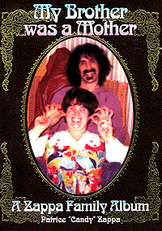

Заппа'zУх!Ой!
русский более или менее регулярный бюллетень для поклонников американского композитора
Frank'а Vincent'а Zappa'ы
Выпуск.45 (30 августа 2003)
Женщины и дети
Что-то стала не по Сеньке шапка. Пять лет минуло. Шестой катит. Сорок пять выпусков. И все. Не лезет голова в картуз. Вроде бы ни толстеть, ни худеет не должна, глобус, а не хочет. Если так дальше пойдет, смотришь, и не украсится генеральской кокардой. Пятьдесят. Чайной розой. Юбилейной борщевой гвоздикой.
Жаль будет. Все-таки приятно, когда у человека есть цель в жизни. Задача. И он ее решает. Не сдается. Вот, например, Кэнди. Сестра Фрэнка Заппы, пять лет назад пообещала книгу написать. Намекнула в частном письме, дескать строчу вовсю, только не выдавай. Ну, я, конечно, могила. Но и Кэнди не подвела. Сестренка нашего FZ. Дала стране угля. Девяносто страниц в мягкой обложке. My Brother Was A Mother.

Правда, такое название уже однажды было. Похожее. В тысяча девятьсот шестьдесят восьмом. Статья в журнале. C. Robert Zappa. My Brother Is An Italian Mother. Зато современный вариант солиднее. Имеет подзаголовок. A Zappa Family Album.Содержание, истории и анекдоты, тоже уже по большей части были. Обнародованы. Составили когда-то интервью. Но, и тут без обид. Потому, что действительно альбом. Треть объема, тридцать четыре страницы, самый настоящий кодак-хром, фотки. Картинки. Черно-белые. Плюс к ним еще десяток или два на фоне текста. Среди буковок. И еще рисунок. Сюрприз. На целый разворот. A Day At The Beach - early artwork by Frank Zappa done for his sister Candy. Смешной.
Как и заключительная главка. Not the 'Idle Meandering Of Chemically Altered Mind...' Взволнованный рассказ о спиритических сеансах. Беседах при луне. Контактах с духом усопшего маэстро. Родственника. Тайну Corla Plankton не выдает. Но отыскать потерянные мелкие предмет помогает.
Кровные узы, связь. Недостаток вроде близорукости. Никому недоступный угол обзора. Меняет точку зрения. Перестаешь, например, воображать, что кумир и гений напрямую произошел от Гранд Каньона и Ниагары. Вовсе нет. Вот мама, RoseMarie Colimore в девичестве, симпатичное создание на велосипеде. Вот папа, Fransis Vincent Zappa, с острыми перышками усиков. Не выпендрешь, а просто итальянская традиция - художественно оформлять растительность под нижней губой. Все встает на свои места, когда появляется семья. Теплая и понятная точка в черной безбрежности вечного. Дом, в которой все дети любимые. И те, что официантами в гамбургерной, и те, что имена дают. Улицам и астероидам.
Mom come and get me.
Мама забери меня отсюда. Такой же. Не утес на Волге. Нет. Белковый, теплокровный. С душой и сердцем. Позвонил и попросил увезти от первой жены. Frank Zappa. Мама, выручай. Зато когда вышел Freak Out! сам приехал. К своим. Привез альбом и крутил диски на семейном патефоне. Улыбался и спрашивал. - Ну, как?
It's great, isn't it?
Человеческое измерение. Изменение соотношения далекого и близкого. Коррекция образа. Очень полезная вещь. Гуманизация небесный объектов. Комет, ракет и звезд. Здорово! И с этим можно автора поздравить. А заодно и нас. Стартовая позиция у Кэнди, конечно, была незавидной. На десять лет младше. Девочка. Воспитывалась в строгих католических традициях. Всячески оберегалась от дурного влияния. Даже в гости к Фрэнку наведывалось с папой. В сопровождении строгого сицилийца и морально безупречного гражданина США. Что она могла добавить к портрету FZ? Только сердечность. Тепло и простоту. В чем и преуспела.
Сбалансировала абсолютный космизм The Real Frank Zappa Book, закрытость и герметичность костюма астронавта, розой и прозой. Плюшевым мишкой и свистком. Ну, что ж, и замечательно. На то они и созданы. Женщины и дети. Существуют. Радуют.
Поскольку там, где женщины и дети, всегда имеется надежда. Остается шанс, что за сорок пятым будет сорок шестой. За ним сорок седьмой, сорок восьмой, сорок девятый и даже пятидесятый. Красавец с гвардейскою звездой во лбу. Жизнь не окончится. Ура.
И с этой верой веселей.
Искренне Ваш, Владимир Советов
http://www.arf.ru/
| Домой | Заппа'zУх!Ой! | Поиск | Хозяин |